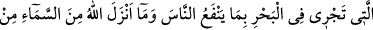
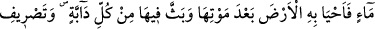
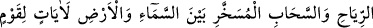
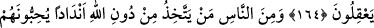
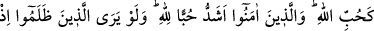
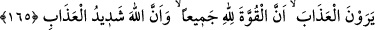
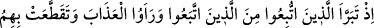
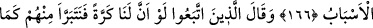
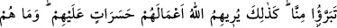
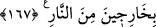

TEVHİD ÇAĞRISI
164. Şüphesiz göklerin ve yerin yaratılmasında, gece ile gündüzün birbiri
peşinden gelmesinde, insanlara fayda veren şeylerle yüklü olarak denizde yüzüp
giden gemilerde, Allah’ın gökten indirip de ölü haldeki toprağı canlandırdığı suda,
yeryüzünde her çeşit canlıyı yaymasında, rüzgârları ve yer ile gök arasında emre
hazır bekleyen bulutları yönlendirmesinde düşünen bir toplum için (Allah’ın
varlığını ve birliğini isbatlayan) birçok deliller vardır.
165. İnsanlardan bazıları Allah’dan başkasını Allah’a denk tanrılar edinir de
onları Allah’ı sever gibi severler. İman edenlerin Allah’a olan sevgileri ise
(onlarınkinden) çok daha fazladır. Keşke zâlimler azâbı gördükleri zaman
(anlayacakları gibi) bütün kuvvetin Allah’a ait olduğunu ve Allah’ın azâbının çok
şiddetli olduğunu önceden anlayabilselerdi.
166. İşte o zaman (görecekler ki) kendilerine uyulup arkalarından gidilenler,
uyanlardan hızla uzaklaşırlar ve (o anda her iki taraf da) azâbı görmüş, nihâyet
aralarındaki bağlar kopup parçalanmıştır.
167. (Kötülere) uyanlar şöyle derler: Ah, keşke bir daha dünyaya geri gitmemiz
mümkün olsaydı da, şimdi onların bizden uzaklaştıkları gibi biz de onlardan
uzaklaşsaydık! Böylece Allah onlara, işlerini, pişmanlık ve üzüntü kaynağı olarak
gösterir ve onlar artık ateşten çıkamazlar.